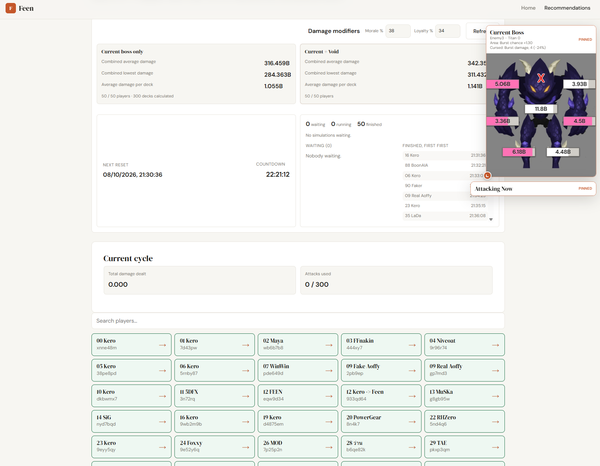
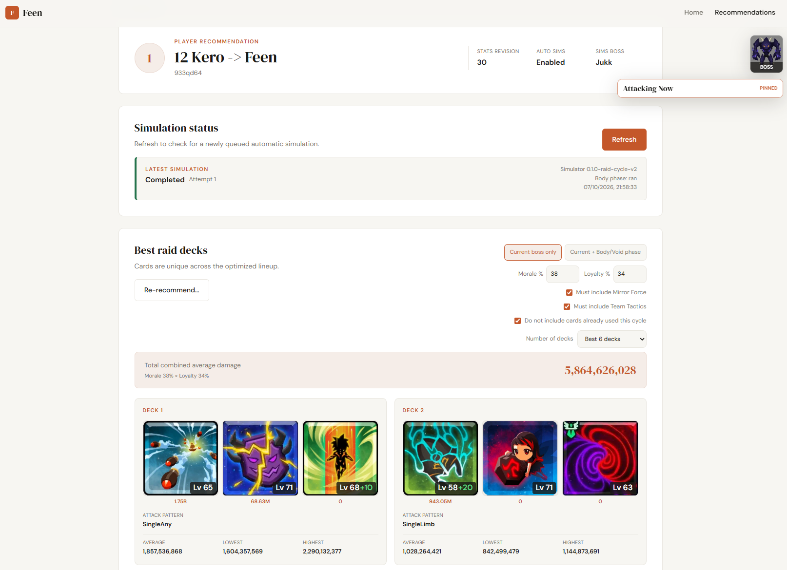

Tap Titans 2 Raid Simulator


About this project
Raid boss simulator I built for my Tap Titans 2 clan. It simulates raid card deck against the current state of raid boss using each clan member's own stats, then recommends the set of decks that deals the most damage.
Stays in sync with the live raid using game's api and Socket.IO. when the boss changes, every player's simulations are queued again automatically piority on player who not finished attack yet (6 per cycle)
Accurately sims all44 raid cards
Every card's mechanics are implemented and work match in games does include 14 affliction, 15 burst and 15 support cards, including damage over time, stacking effects and boss part targeting.
Up to 13,244 decks per player (actually around 8-9k deck excludeing invalid decks).
Every 3-card combination is checked against card-pairing rules and the current boss. Each deck that passes is simulated tick by tick for 600 ticks over 20 times(default), with several attack patterns, so the result reflects how the deck actually plays and card behavior.
6 decks recommended
Players get the best set of decks with no duplicate cards, for the current boss only or void phase. Limit data by using greedy method for top 2048 decks then do branch and bound search to find best combination
Live raid dashboard
Connects to the game's live raid data with SocketIO to display current boss, who is attacking, the attack log and card usage this cycle, with a countdown to the next raid reset.
Checked against the real game
Golden tests run single attacks with every card forced to proc and compare the damage, card by card, to numbers measured by hand in Tap Titans 2.
Technical
- Rust backend (Axum, Tokio, SQLx) with PostgreSQL
- Simulations run as background jobs on a separate worker service
- Bitmask-based search to pick the best deck set quickly
- Live raid events over WebSocket (Socket.IO)
- React + TypeScript frontend, deployed separately as a static site
- Docker images and GitHub Actions builds and deploy with coolify on Oracle Cloud Server